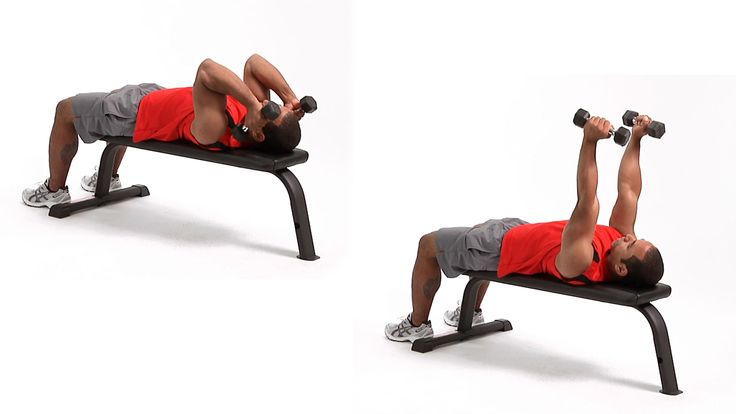
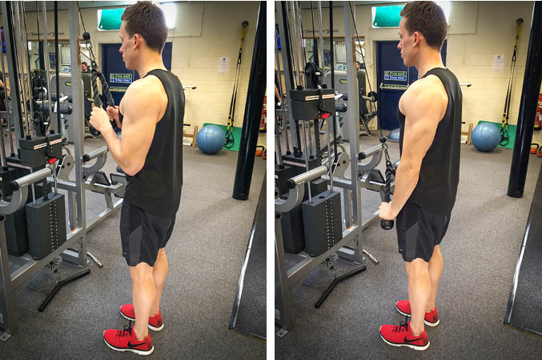
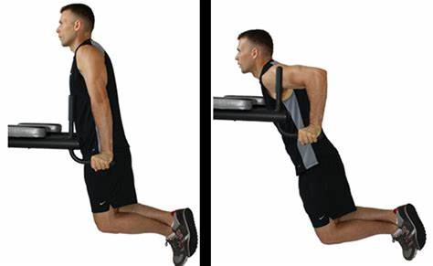

Skull Crushers
Skull crushers work your triceps — the muscle on the back of your upper arm. The triceps, as the name implies, is a muscle with three heads. If you’re new to this exercise, start with a low weight and work on perfecting your form. As you become familiar with the exercise and gain strength, you can slowly increase the weight you use. Sit on the bench with the barbell on your lap. Grasp the barbell with a shoulder-width grip, palms facing down, while keeping your wrists straight. Lie on your back as you bring the weight up to a position over your collarbone. Keeping your shoulders stable, slowly bend your elbows, bringing the weight down to just past your head. Keep your elbows pointing straight ahead as you lower the weight. Hold for 1–2 seconds. Then straighten your elbows, pushing the weight back to an overhead position. Keep your humerus bone fixed in space throughout the movement
Tricep Pulldowns
As you prepare for this move, face the tricep pushdown cable machine and grasp the horizontal cable bar or rope attachment (depending on the machine your gym has) with an overhand grip. Adjust the bar or rope grips to about chest level. Use the pin-and-place adjustment and set a low weight to start. Start by bracing your abdominals. Tuck your elbows in at your sides and position your feet slightly apart. Inhale. Push down until your elbows are fully extended but not yet in the straight, locked position. Keep your elbows close to your body and bend your knees slightly on the pushdown. Resist bending forward. Try to keep your back as straight as possible as you push down. As you exhale, return to the starting point using a controlled movement. Try not to crash the weights.
Tricep Dips
The triceps dip exercise is a great bodyweight exercise that builds arm and shoulder strength. This simple exercise can be done almost anywhere and has many variations to match your fitness level. Use it as part of an upper-body strength workout. Sit on the edge of a stable chair, weight bench, or step and grip the edge next to your hips. Your fingers should be pointed at your feet, your legs extended, and your feet about hip-width apart, with the heels touching the ground. Look straight ahead with your chin up. Press into your palms to lift your body and slide forward just far enough that your behind clears the edge of the chair. Lower yourself until your elbows are bent between 45 and 90 degrees. Control the movement throughout the range of motion. Push yourself back up slowly until your arms are almost straight, and repeat.